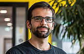
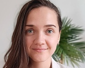

This project aims to assess the number and distribution of wild horse populations in Europe. To achieve this, we use social media platforms to help identify where these populations are located. Using this prelimiary data, we send surveys to all users with potential relevant information about wild horse populations to assess:
Our ultimate goal is to establish a network of local associations supported by academic institutions to promote wild horse populations in Europe. This includes, among others, applying for EU fundings and leverage with stakeholders and local authorities in order to promote normatives and legislations to protect wild horses.
Our goal is to highlight current gaps in the protection of wild horses in Europe and to propose economic, political, and administrative solutions.

Emilio Berti
German Centre for Integrative Biodiversity Research (iDiv) Halle-Jena-Leipzig
emilio.berti@idiv.de
+49 341 9733240

Caitlin Wilkinson
German Centre for Integrative Biodiversity Research (iDiv) Halle-Jena-Leipzig
caitlin.wilkinson@idiv.de
+49 341 9739178